第1课时：Transformer 核心与 Self-Attention 深度剖析¶
1. Transformer基础入门¶
在聊 Transformer 之前，先想象一下：如果没有它，现代大语言模型就像一支乐队，没有指挥，每个乐器都各自为战，节奏混乱。Transformer 就是那位聪明的指挥，让模型能够同时关注每个词的位置和关系，从而谱出连贯的“语言交响曲”。
1.1 Transformer的诞生与核心思想¶
当我们第一次使用 ChatGPT 这类聊天模型时，最直观的感受往往是：你输入一个问题，它会像人在“思考”一样，一字一句地给出回答。
这种逐字生成的过程并非一次性输出完整答案，而是模型在不断基于已有上下文，预测下一个最可能出现的 token。看似自然流畅的对话背后，其实隐藏着一个极其简单、却被反复执行了数十亿次的核心问题：
在当前上下文条件下，下一个 token 应该是什么？
正是围绕这一问题，现代文本生成模型构建起了完整的技术体系。而支撑这一切的底层结构，正是 Transformer。
从更宏观的角度看，Transformer 并不仅仅是一个用于“聊天”的模型结构。自 2017 年 Google 在论文《Attention Is All You Need》中首次提出 Transformer 以来，它已经从根本上改变了人工智能模型的构建方式，成为深度学习领域的通用架构范式。如今，无论是 OpenAI 的 GPT 系列、Meta 的 LLaMA，还是 Google 的 Gemini，其核心都建立在 Transformer 之上。更进一步，Transformer 早已超越文本领域，被广泛应用于语音生成、图像识别、蛋白质结构预测，甚至复杂博弈与决策任务中，展现出极强的通用性。
从本质上说，文本生成类 Transformer 模型遵循的始终是同一条基本原则：next-token prediction。给定一段用户输入的文本，模型所做的全部工作，就是估计在当前上下文条件下，下一个 token 出现的概率分布，并从中采样或选择最优结果。这一过程被不断重复，最终形成我们所看到的连贯回答。
Transformer 真正的技术突破，正是为这一预测任务提供了一种前所未有的高效实现方式。
在 Transformer 出现之前，自然语言处理领域主要依赖循环神经网络（RNN）及其变体 LSTM、GRU 来建模序列。这类模型通过时间步逐步传递隐藏状态，天然符合语言的顺序特性，但也带来了明显限制：一方面，序列计算必须严格按顺序进行，难以并行，训练效率低；另一方面，随着文本变长，早期信息会逐渐衰减，长距离依赖难以稳定建模。
Transformer 的设计选择了完全不同的路径。它彻底放弃了循环结构，转而引入自注意力机制（Self-Attention），使模型能够在同一时间关注序列中的所有位置，并显式计算任意两个 token 之间的关联强度。模型不再沿着时间轴被动前进，而是主动在整个上下文中寻找“与当前预测最相关的信息”。这也是为什么，在聊天场景中，即便某个概念出现在很早的位置，模型依然能够在后续回答中准确引用并延续语义。
如果说 Transformer 解决的是“模型如何理解上下文”的问题，那么另一个几乎同期的重要工作，则回答了“模型如何学会语言”。FastAI 团队在《Universal Language Model Fine-tuning for Text Classification（ULMFiT）》中系统性地提出了迁移学习在 NLP 中的实践路径。他们证明：一个在大规模通用文本上训练好的语言模型，可以通过少量标注数据，高效迁移到具体下游任务上，并显著优于从零训练的方案。这一思想后来被概括为今天广为人知的范式：
预训练（Pre-training） + 微调（Fine-tuning）
Transformer 提供了强大的结构表达能力，而 ULMFiT 则证明了通用语言模型本身具有高度可迁移性。二者结合，直接催生了两类具有代表性的模型架构：
- GPT：基于 Transformer Decoder，通过自回归方式逐 token 生成文本；
- BERT：基于 Transformer Encoder，通过双向上下文建模获取语义表示。
从此，自然语言处理正式进入以 Transformer 为核心的时代。
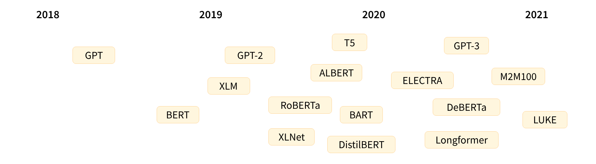
需要特别强调的是，Transformer 真正改变游戏规则的，并不仅仅是网络结构本身，而是它所依赖的训练范式。现代大模型普遍采用自监督学习（Self-supervised Learning），训练信号直接从原始文本中自动构造，而不依赖人工逐句标注。最典型的两类预训练任务包括：
- 因果语言建模（Causal Language Modeling, CLM）：预测下一个 token；
- 遮盖语言建模（Masked Language Modeling, MLM）：预测被遮盖的词。
通过在海量语料上反复执行这些任务，模型逐渐掌握了词法、句法、语义乃至部分世界知识。从表面看，它只是不断地“猜词”；但在规模足够大、训练足够充分时，这种统计学习会自然涌现出复杂的语言理解与生成能力。
在许多教学和可视化工具中，GPT-2 这类模型常被用作理解 Transformer 的起点。例如 Transformer Explainer 所采用的 GPT-2 Small 模型，虽然只有 1.24 亿参数，远不及当前的前沿模型规模，但其内部结构、注意力机制和逐 token 生成逻辑，与今天的大模型在本质上是一致的。这也使得它成为理解 Transformer 工作原理的理想范例。
从用户熟悉的聊天体验一路回溯，Transformer 的核心思想其实可以概括为一句话：
用自注意力理解上下文，用自监督学习掌握语言。
正是这一思想，使得语言模型不再依赖人工规则或任务专用结构，而是通过规模化预训练获得通用能力，并不断向多模态、工具调用与复杂推理扩展。今天我们所看到的 ChatGPT、GPT-4、T5 等模型，本质上都是这一技术路线的自然延伸。
1.2 Encoder 与 Decoder的区别与应用¶
要真正理解 Transformer，就必须先搞清楚它的两个主角 —— Encoder（编码器） 和 Decoder（解码器）。
原始的 Transformer 模型结构如下图所示，Encoder 在左，Decoder 在右。
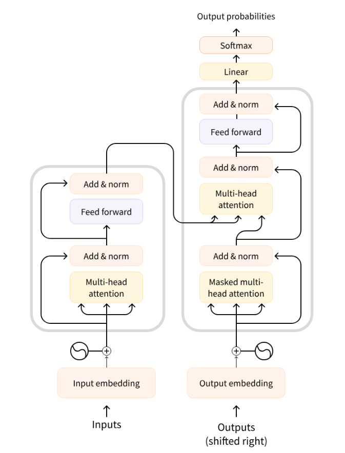
它们的关系有点像一场对话中的两种角色：
- Encoder 是那个“听懂别人说话的人”，
- 而 Decoder 是那个“把意思说出来的人”。
Encoder：理解输入的“听者”
Encoder 模块的任务是理解输入文本的含义。
它会把输入的每个词转换成向量，然后通过一层层的自注意力机制，让这些词互相“看见”彼此，从而捕捉上下文语义。
简单来说，Encoder 不只是逐词阅读，而是能在读到 “猫坐在垫子上” 时意识到：
- “猫” 是主语，
- “坐” 是动作，
- “垫子” 是宾语。
这就是 Transformer 最厉害的地方——它能同时关注整个句子。
而且因为它是双向注意力（Bidirectional Attention），Encoder 可以同时看到词前后的信息，因此非常适合需要“理解语义”的任务，比如：
- 文本分类（情感分析、主题识别）
- 命名实体识别（NER）
- 相似度匹配（句子对判断）
代表模型：BERT、RoBERTa、ELECTRA、DeBERTa 等。
Decoder：生成输出的“说者”
Decoder 的任务刚好相反——它负责根据已有信息生成新的文本。
它的输入通常是上一步已经生成的内容，而输出则是下一个要生成的词。
比如，当 Decoder 已经生成了“我今天”，它会尝试预测接下来该输出什么：
“我今天 很开心。”
与 Encoder 不同，Decoder 使用的是自回归注意力（Auto-regressive Attention）：
它只能“看到”自己前面生成的词，而不能偷看未来的内容。
在训练时，为了防止“作弊”，我们会用一个叫 Mask（遮盖） 的机制，把未来词的信息挡住，让模型只能依靠历史内容生成下一步。
这种逐词生成的方式让 Decoder 特别适合生成类任务，比如：
- 文本续写、故事生成
- 摘要生成
- 对话回复
- 代码补全
代表模型：GPT、GPT-2、GPT-3、LLaMA、Qwen、ChatGPT 等。
Encoder-Decoder：理解 + 生成的“翻译官”
原始的 Transformer（2017）其实是为机器翻译设计的，因此它同时拥有 Encoder 和 Decoder 两部分。
工作原理非常直观：
- Encoder 负责理解源语言（比如英文）；
- Decoder 负责在另一种语言中生成对应句子（比如中文）。
举个例子：
输入句子 “I love apples.”
Encoder 理解到这句话的语义是 “我喜欢苹果”，
Decoder 结合上下文生成 “我喜欢苹果”。
这种架构也被称为 Seq2Seq（Sequence-to-Sequence）模型，
是连接理解与生成的桥梁，非常适合需要“输入→输出”的任务：
- 机器翻译（Translate English → Chinese）
- 文本摘要（长文 → 短摘要）
- 生成式问答（Question → Answer）
代表模型：T5、BART、FLAN-T5、M2M-100 等。
提示
Transformer 的威力，不仅在于注意力机制，更在于它灵活的结构组合。你可以只用 Encoder 来做“理解型任务”，也可以只用 Decoder 来做“生成型任务”，或者用 Encoder-Decoder 来同时理解输入并生成输出。一句话总结就是：Encoder 让模型听懂人话，Decoder 让模型说出人话。这也是所有现代大语言模型的基本结构蓝图。
2. Transformer 层级结构¶
在上一节中，我们从聊天机器人的直观体验出发，看到了大语言模型是如何“一个 token 接一个 token”地生成回答的。无论回答看起来多么自然流畅，在模型内部，它始终围绕着同一个核心任务运转：给定当前这句话，预测下一个最可能出现的 token。要完成这一看似简单、实则极其复杂的预测过程，如下所示：
- 输入：“Artificial Intelligence is transforming the”
- 预测下个token：“world”
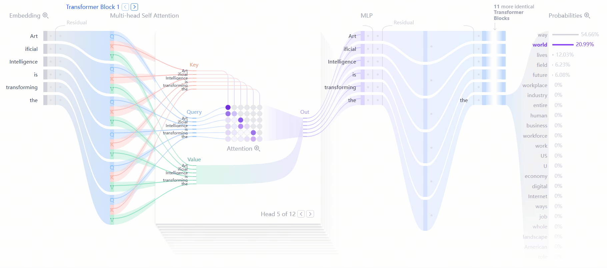
Transformer 在内部构建了一套高度模块化的层级结构，几乎所有文本生成类 Transformer，都可以抽象为三个相互衔接的关键组成部分：Embedding、Transformer Block，以及最终的输出概率计算。
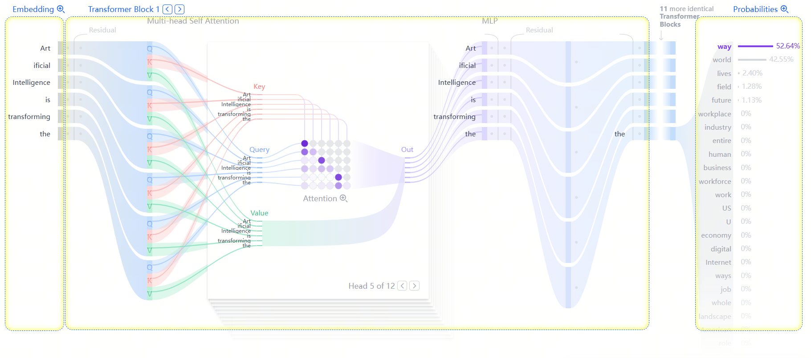
首先是 Embedding 阶段。当用户输入一段文本时，模型并不会直接“理解句子”，而是先将文本切分为更小的单位，即 token。token 可以是一个完整的词，也可以是词的一部分。每一个 token 都会被映射为一个高维向量，这个向量被称为 embedding。Embedding 的作用，是把离散的符号转换为连续的数值表示，使模型能够在向量空间中刻画词语之间的语义相似性与差异性。换句话说，在这一阶段，语言被翻译成了模型可以计算的“数学形式”。
Embedding 之后，信息会进入模型的核心计算单元——Transformer Block。Transformer 并不是只包含一个 Block，而是将多个结构相同的 Block 进行堆叠，每一层都会在上一层的基础上，进一步提炼和重组语义信息。正是这种逐层加工，使得模型能够从“局部词义”逐渐过渡到“整体语境理解”。
在每一个 Transformer Block 内部，又包含两个至关重要的子模块。
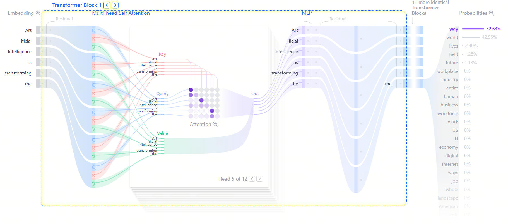
- 第一个是注意力机制（Attention Mechanism），它是 Transformer 的核心创新。注意力的作用，是让每一个 token 在生成自身表示时，都能够动态地参考序列中其他 token 的信息。通过注意力，模型可以判断：在当前预测任务中，哪些词更重要，哪些上下文应该被重点关注。这正是模型能够处理长距离依赖、跨句关联的根本原因，也是聊天模型在长对话中“记得住前文”的关键所在。
- 第二个子模块是前馈网络（MLP，Multilayer Perceptron）。与注意力层负责“信息在 token 之间如何流动”不同，MLP 的作用更偏向于“对单个 token 的表示进行非线性变换和细化”。它对每个 token 独立工作，增强表示的表达能力，使模型能够刻画更加复杂、抽象的语义特征。可以将注意力理解为“信息路由器”，而 MLP 则是“特征加工器”。
当输入文本依次通过多层 Transformer Block 后，每个 token 都会得到一个高度语义化的向量表示。此时，模型已经整合了上下文信息、句法结构以及潜在的语义关系。最后一步是输出概率的计算。模型会通过一个线性映射和 softmax 层，将当前上下文对应的向量表示转换为一个概率分布。这个分布覆盖整个词表，表示“下一个 token 是每一个候选 token 的可能性有多大”。模型正是基于这个概率分布，选择或采样出下一个 token，并将其追加到已有文本中，形成新的上下文。随后，同样的过程会再次执行：新的上下文被送入模型，预测下一个 token，如此循环，直到生成完整回答。
从整体上看，Transformer 并不是在“理解问题然后给出答案”，而是在不断重复一个高度结构化的过程：将文本转为向量，通过多层注意力与非线性变换整合上下文信息，再基于概率分布预测下一个 token。正是这一过程的高速迭代，构成了我们在聊天界面中所看到的逐字响应体验。在接下来的小节中，我们将沿着这一生成路径，逐层拆解 Transformer Block 的内部结构，具体看看注意力是如何计算的，多头机制又为何必不可少，以及残差连接与层归一化在其中扮演了怎样的稳定器角色。
2.1 Embedding¶
假设我们希望使用一个 Transformer 模型来生成文本，首先需要向模型提供一段输入提示，例如：
“Data visualization empowers users to”
然而，模型本身并不能直接“理解”字符串形式的文本。它所能处理的，是数值形式的数据。这正是 Embedding 层存在的意义：将自然语言文本转换为模型可以计算和建模的向量表示。
从整体流程上看，将一段输入文本转换为 embedding，通常需要经历四个步骤：
- Tokenization（分词）
- Token Embedding（词向量映射）
- Positional Encoding（位置编码）
- 生成最终 Embedding 表示
下面我们依次展开说明这四个步骤。
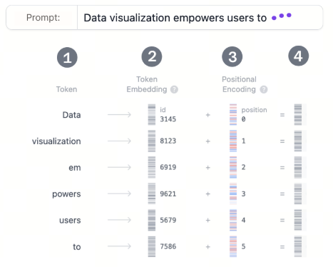
Step 1：Tokenization（分词）¶
Tokenization 是将输入文本拆分为更小、可处理单元的过程，这些单元被称为 token。token 可以是一个完整的词，也可以是词的一部分（子词）。
以示例文本 “Data visualization empowers users to” 为例，在 GPT-2 的分词体系中：
- “Data”
- “visualization”
- “empowers”
- “users”
- “to”
都会被映射为词表中唯一的 token（或 token 组合），每个 token 对应一个固定的 ID。需要注意的是，token 的切分方式完全由模型在训练前所使用的词表决定。以 GPT-2 为例，它的词表规模约为 50,257 个 token。一旦文本被转换为一串 token ID，模型就可以基于这些 ID 查找对应的向量表示。
Step 2：Token Embedding（词向量映射）¶
在 GPT-2（small）模型中，每一个 token 都被表示为一个 768 维的向量。所有 token 的向量共同组成一个巨大的 embedding 矩阵，其形状为：
(50,257, 768)
这意味着，仅 embedding 层本身就包含约 3900 万个可训练参数。
这个 embedding 矩阵并不是人工设计的，而是在模型训练过程中自动学习得到的。训练完成后，具有相似语义或使用场景的 token，其向量往往会在高维空间中彼此接近；而语义差异较大的 token，则会相距较远。正是这种分布式表示，使模型能够在数值空间中“感知”语言的语义结构。
Step 3：Positional Encoding（位置编码）¶
仅有 token embedding 还不够。因为 Transformer 本身不包含循环结构，也无法天然感知词语的先后顺序，因此必须显式地引入位置信息。
Embedding 层会为序列中的每一个位置提供一个位置编码，用来表示该 token 在输入序列中的相对或绝对位置。不同模型采用的位置编码方式并不相同。
在 GPT-2 中，位置编码同样是通过一个可训练的向量矩阵实现的。这些位置向量在训练过程中与 token embedding 一同被优化，从而让模型学会如何利用顺序信息。
Step 4：Final Embedding（最终嵌入表示）¶
在最后一步中，模型会将 token embedding 与对应位置的 positional encoding 进行逐元素相加，得到最终的 embedding 表示。
这个最终 embedding 同时包含了两类关键信息：
- token 的语义含义
- token 在序列中的位置信息
随后，这些 embedding 向量将作为 Transformer Block 的输入，进入注意力机制和后续的多层计算过程。正是从这一刻起，模型开始真正对“上下文关系”进行建模，并逐步为下一个 token 的预测做好准备。
2.2 Transformer Block¶
Transformer 的核心计算单元是 Transformer Block。一个标准的 Transformer Block 由两部分组成：多头自注意力（Multi-Head Self-Attention）和前馈神经网络（Multi-Layer Perceptron，MLP）。实际模型通常会将多个这样的 Block 按顺序堆叠起来，形成深层网络结构。
随着输入 token 表示从第一层 Transformer Block 逐层传递到最后一层，它们所携带的信息也在不断演化：从最初偏向词法和局部上下文的表示，逐渐转变为包含更高阶语义、跨句依赖甚至任务相关信息的抽象表示。正是这种“层层加工”的机制，使模型能够对每一个 token 建立起精细而全面的理解。
以 GPT-2（small）为例，它正是由多层这样的 Transformer Block 依次堆叠而成。
多头自注意力机制（Multi-Head Self-Attention）¶
自注意力机制的核心作用，是让序列中的每一个 token 都能够根据上下文中其他 token 的信息来更新自身表示。换句话说，每个 token 在“看自己”的同时，也会参考其他 token，从而建立上下文依赖关系。
多头机制的引入，使模型可以从不同角度同时建模这些关系。例如，某些注意力头可能更关注局部的语法结构，而另一些则更擅长捕捉长距离的语义关联。下面我们分步骤来看多头自注意力是如何计算的。
Step 1：Query、Key 和 Value 的计算¶
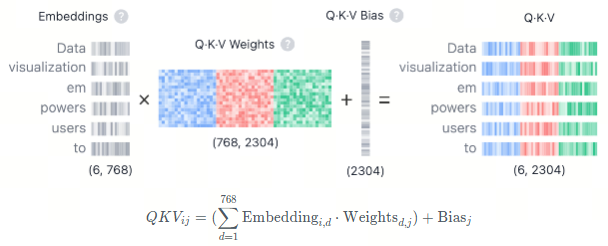
对于输入序列中的每一个 token，其 embedding 向量都会被映射为三个不同的向量：Query（Q）、Key（K）和 Value（V）。这一映射通过与三组可学习的线性变换矩阵相乘并加上偏置完成，其形式可以表示为：
也就是说，同一个 token 的 embedding 会分别生成 Q、K、V 三种表示，用于后续的注意力计算。
为了直观理解 Q、K、V 的作用，可以类比为一次网页搜索过程：
- Query（Q）类似于你在搜索框中输入的查询词，代表当前 token 想要“关注什么”；
- Key（K）类似于搜索结果中每个网页的标题，用来与查询词进行匹配；
- Value（V）则对应网页的实际内容，一旦匹配成功，模型真正要读取和汇总的就是这些内容。
通过 Q、K、V 的组合，模型能够计算出不同 token 之间的相关程度，从而决定在生成表示时应当重点关注哪些位置。
Step 2：多头拆分（Multi-Head Splitting）¶
在多头自注意力中，Query、Key 和 Value 向量会被拆分成多个子空间，也就是多个注意力头。以 GPT-2（small）为例，这些向量会被拆分为若干个注意力头，每个头只负责处理 embedding 的一部分维度。
每个注意力头都会独立执行自注意力计算，从而学习不同类型的语言特征。这种并行的设计，使模型能够同时捕捉多种语法和语义模式，大幅提升表达能力。
Step 3：Masked Self-Attention（带掩码的自注意力）¶
在每一个注意力头内部，模型都会执行带掩码的自注意力计算。这一步对于文本生成模型尤为关键，因为它确保模型在预测下一个 token 时，不能访问未来的信息。
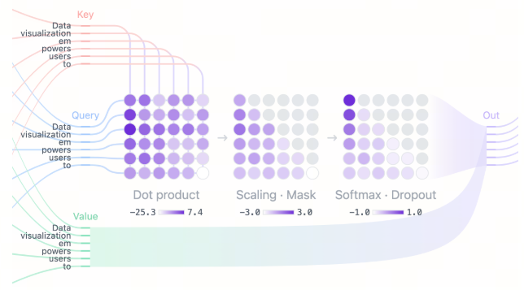
具体过程包括：
- 点积计算：将 Query 矩阵与 Key 矩阵做点积，得到一个注意力分数矩阵，用于表示序列中任意两个 token 之间的相关性；
- 缩放与掩码：对注意力分数进行缩放，并对矩阵的上三角区域施加掩码，将对应位置的值设为负无穷，从而阻止模型“偷看”尚未生成的 token；
- Softmax 与 Dropout：对掩码后的分数应用 softmax，将其转化为概率分布，使每一行的概率和为 1，并在训练时可选地使用 dropout 进行正则化。
经过这一步，模型就得到了一个只依赖历史信息的注意力权重分布。
Step 4：输出计算与拼接¶
最后，模型使用得到的注意力权重对 Value 矩阵进行加权求和，生成每个注意力头的输出表示。由于每个头关注的侧重点不同，它们的输出也会捕捉到不同层面的关系。
这些注意力头的输出会被拼接在一起，并通过一个线性变换映射回原始维度，形成多头自注意力模块的最终输出。该结果随后会进入后续的残差连接、层归一化以及 MLP 层，继续完成一次 Transformer Block 的完整计算。
MLP：多层感知机（Multi-Layer Perceptron）¶
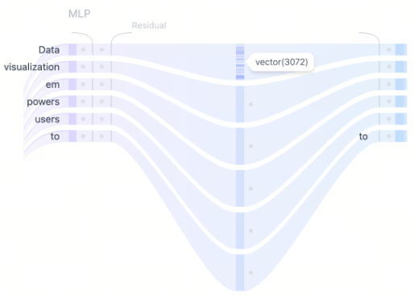
在多头自注意力机制捕获了输入 token 之间的多样化关系之后，将各个注意力头的输出进行拼接，并送入多层感知机（MLP）层，以进一步提升模型的表示能力。MLP 模块由两次线性变换组成，中间采用 GELU 激活函数。
第一层线性变换将输入的维度扩大四倍，从 768 扩展到 3072。这一扩展步骤使模型能够将 token 表示映射到更高维的空间中，从而捕获在原始维度下难以显现的、更丰富且更复杂的特征模式。
第二层线性变换再将维度压缩回原始大小 768。这一压缩步骤在保留扩展阶段引入的有用非线性变换的同时，使表示重新回到一个可控的维度规模。
与自注意力机制不同，自注意力负责在不同 token 之间进行信息交互，而 MLP 则是对每个 token 独立进行处理，仅在特征空间中完成从一种表示到另一种表示的映射，从而整体上增强模型的表达能力。
2.3 Output Probabilities¶
在输入依次通过所有 Transformer 模块之后，最终的输出会被送入最后一层线性层，以为 token 预测做准备。该线性层将最终的表示投影到一个维度空间中，在这个空间里，词表中的每一个 token 都对应一个数值，称为 logit。由于任意一个 token 都可能成为下一个词，这一步使我们能够根据这些 logit 对所有 token 作为下一个词的可能性进行排序。随后，我们应用 softmax 函数，将 logit 转换为一个和为 1 的概率分布，从而可以根据各自的概率对下一个 token 进行采样。词表大小为 50,257。
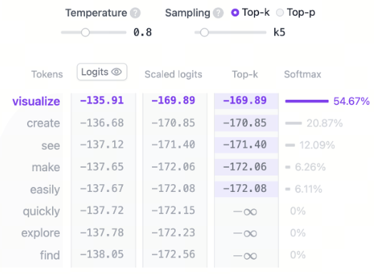
词表中的每个 token 都会根据模型输出的 logit 被分配一个概率，这些概率决定了各个 token 成为序列中下一个词的可能性。最后一步是从该概率分布中采样生成下一个 token。在这一过程中，temperature（温度） 这一超参数起着至关重要的作用。从数学角度来看，这一步的操作非常简单：模型输出的 logit 会直接除以温度参数 temperature。
- temperature = 1：logit 除以 1 不会对 softmax 的输出产生任何影响。
- temperature < 1：较低的温度会使概率分布更加尖锐，使模型更自信、更具确定性，从而生成更加可预测的输出。
- temperature > 1：较高的温度会使概率分布更加平滑，允许生成结果中包含更多随机性，也就是常说的模型“创造力”。
此外，采样过程还可以通过 top-k 和 top-p 参数进一步优化：
- top-k 采样：将候选 token 限制在概率最高的前 k 个 token 中，过滤掉概率较低的选项。
- top-p 采样：选择累计概率超过阈值 p 的最小 token 集合，在保证只考虑高概率 token 的同时，仍然保留一定的多样性。
通过调节 temperature、top-k 和 top-p，可以在确定性与多样性之间取得平衡，从而根据具体需求定制模型的生成行为。
2.4 辅助架构特性¶
Transformer 模型中包含若干辅助性的架构特性，用于提升模型的整体性能。尽管这些机制对模型性能至关重要，但相较于架构的核心概念，它们并不是理解 Transformer 工作原理的关键。层归一化（Layer Normalization）、Dropout 和 残差连接（Residual Connections） 是 Transformer 模型中的重要组成部分，尤其在训练阶段发挥着关键作用。层归一化能够稳定训练过程并加快模型收敛；Dropout 通过随机失活神经元来防止过拟合；残差连接则允许梯度在网络中直接传播，有助于缓解梯度消失问题。
层归一化¶
层归一化（Layer Normalization）有助于稳定训练过程并提升收敛速度。它通过在特征维度上对输入进行归一化，确保激活值的均值和方差保持一致。这种归一化方式可以缓解内部协变量偏移问题，使模型能够更高效地学习，并降低对初始权重设置的敏感性。在每个 Transformer 块中，层归一化会被应用两次：一次位于自注意力机制之前，另一次位于 MLP 层之前。
Dropout¶
Dropout 是一种用于防止神经网络过拟合的正则化技术，在训练过程中会随机将一部分激活值（或神经元输出）置为零。这一机制促使模型学习更加鲁棒的特征，减少对某些特定神经元的依赖，从而提升网络在未见数据上的泛化能力。在模型推理阶段，Dropout 会被关闭。这在本质上等价于使用一组已训练子网络的集成，从而带来更好的模型性能。
残差连接¶
残差连接（Residual Connections）最早由 ResNet 模型在 2015 年提出，这一架构创新极大地推动了深度学习的发展，使得训练非常深的神经网络成为可能。残差连接本质上是一种“捷径”结构，它绕过一层或多层网络，将某一层的输入直接加到该层的输出上。这种设计有助于缓解梯度消失问题，使得由多个 Transformer 块堆叠而成的深层网络更容易训练。在 GPT-2 中，每个 Transformer 块内部使用了两次残差连接，分别作用在 self-attention 子层和 MLP 子层的输出上，从而保证梯度能够更顺畅地传播，并使较早的层在反向传播过程中获得充分的更新。
交互式功能¶
Transformer Explainer 被设计为一个交互式工具，允许用户探索 Transformer 的内部工作机制。你可以体验以下交互功能：
- 输入你自己的文本序列，观察模型如何对其进行处理并预测下一个词；同时可以查看注意力权重和中间计算过程，了解最终输出概率是如何得到的。
- 使用 temperature 滑块来控制模型预测的随机性，通过调整温度值，探索如何让模型输出更加确定或更具创造性。
- 选择 top-k 和 top-p 采样方法，以在推理阶段调整采样行为；尝试不同的参数取值，观察概率分布的变化及其对模型预测的影响。
- 与注意力图进行交互，查看模型在输入序列中对不同 token 的关注程度；将鼠标悬停在 token 上可以高亮其对应的注意力权重，从而理解模型如何捕捉上下文信息以及词与词之间的关系。
3. 位置编码机制与序列建模能力¶
3.1 为什么 Attention 需要位置信息¶
在 Transformer 出现之前，序列建模这件事几乎是“顺序优先”的世界。
RNN、LSTM 这类模型，天然带着时间轴。输入从左到右流动，隐藏状态在时间步之间传递，前一个词的状态会直接影响后一个词的表示。模型不需要被提醒“顺序是什么”，因为顺序本身已经写进了计算图里。
这种结构很像听人讲故事：一句一句往下听，前文自然会留在记忆里。
Transformer 选择了一条完全不同的路。
它把整段序列一次性送进模型，所有 token 同时参与计算。没有时间步、没有状态传递，只有并行的向量运算和注意力权重的分配。效率大幅提升，但也带来了一个无法回避的问题：
当所有词是“同时出现”的，模型凭什么知道谁在前，谁在后？
如果什么都不做，Self-Attention 的计算在数学上是对顺序不敏感的。
Attention 天生是“无序”的，回忆一下 Self-Attention 的核心计算形式：
这里的含义是：
- \(Q\)（Query）：当前 token 的查询向量
- \(K\)（Key）：所有 token 的键向量
- \(V\)（Value）：所有 token 的值向量
- \(d_k\)：Key 向量的维度，用于缩放防止数值过大
注意力权重完全由 \(Q\) 与 \(K\) 的点积相似度决定。
如果把一句话里的词向量打乱顺序，只要向量集合本身不变，\(QK^\top\) 的结果在理论上并不会感知到“这是第几个词”。
也就是说，Attention 关心的是“相像不相像”，而不是“先后顺序”。
顺序一旦消失，语义就会塌陷。看一个极其简单、却足够致命的例子：
“猫咬狗” “狗咬猫”
从词袋角度看，它们包含的词完全一致：猫、狗、咬。
如果模型不知道哪个词排在前面，注意力看到的只是三种语义单位之间的相互关系，却无法判断谁是施事，谁是受事。语义结构在这里直接发生翻转。
这类问题并不仅存在于中文。
- 英文中的 “man bites dog” 与 “dog bites man”
- 代码中的
a = b - c与c - b = a - 数学表达式里的操作顺序
顺序一旦丢失，模型得到的将不再是“模糊理解”，而是错误理解。
为了解决这个问题，Transformer 引入了位置编码（Positional Encoding）。它并不是试图恢复循环结构，而是换了一种思路：
既然 Attention 看不到顺序，那就把“顺序”直接写进向量里。
每一个 token，在进入模型之前，都会被赋予一个与其位置相关的向量表示。最终送入模型的不是单纯的词向量，而是两部分信息的叠加：
其中：
- \(\mathbf{e}_i\)：第 \(i\) 个 token 的词向量（Token Embedding）
- \(\mathbf{p}_i\)：第 \(i\) 个位置对应的位置编码向量
- \(\mathbf{x}_i\)：Transformer 实际接收的输入表示
这种设计非常“克制”。模型结构本身没有任何改动，Attention 的计算公式也保持不变，只是输入空间悄悄发生了变化。
可以用一个简化的文字示意来理解这个过程：
从这一刻开始，“猫”不再只是“猫”，而是“出现在第 1 个位置的猫”； “狗”也不再只是“狗”，而是“出现在第 3 个位置的狗”。
注意力在计算相似度时，实际上是在这些混合了位置信息的向量之间做比较。
在 PyTorch 中，这种叠加过程往往只有一行：
# token_embeddings: [seq_len, d_model]
# position_embeddings: [seq_len, d_model]
inputs = token_embeddings + position_embeddings
从工程实现角度看，它几乎“轻得没有存在感”。正是这一步，让 Transformer 在没有时间结构的前提下，具备了理解序列的能力。这里有一个经常被忽略的小细节。
位置编码不是拼接（concatenate），而是直接相加。这意味着：
- 模型不会被强制区分“哪一部分是位置，哪一部分是语义”
- 位置信息自然融入表示空间，由注意力机制自行决定是否使用、如何使用
这种设计让位置不再是硬规则，而是一种可学习、可忽略、可放大的信号。它既不会压制语义，也不会喧宾夺主。到这里，Attention 为什么“离不开位置”，已经变得清晰起来。Transformer 并不是不懂顺序，而是需要有人告诉它顺序以什么方式存在。位置编码正是那条连接并行计算与序列理解之间的隐形桥梁。接下来，问题自然就变成了：这些位置信息究竟该怎么编码？这正是后续章节要展开的内容。
3.2 绝对位置编码¶
当位置被正式当作一种建模对象之后，实际工程里很快形成了两条清晰的路线。它们并不是“新旧之分”，而是代表了两种不同的建模态度：位置是规则，还是参数。围绕这个分歧，绝对位置编码逐渐稳定为两种主流实现方式。
一种是固定位置编码，也就是最早写进《Attention Is All You Need》的正弦位置编码；另一种是可学习的位置嵌入，把“位置”本身当作模型可以调整的参数来看待。
先从固定位置编码说起。
正弦位置编码的出发点并不复杂：既然模型需要一个数值向量来表示“这是第 pos 个位置”，那就用一组规则函数来生成它。关键不在于某一个具体数值，而在于不同位置生成的向量在整体上彼此区分，同时又保持某种连续结构。
它的定义形式通常写成下面这样（以偶数维和奇数维成对表示）：
这里各个符号的含义是明确的：
- \(pos\) 表示 token 在序列中的绝对位置索引，常见实现里从 0 开始计数
- \(k\) 是“频率编号”，每一对 \((\sin, \cos)\) 共用一个 \(k\)
- \(d\) 是模型的隐藏维度（embedding size），决定一共能放下多少对频率
- \(\text{PE}_{(pos, i)}\) 是位置 \(pos\) 在第 \(i\) 个维度上的编码值
把这个公式拆开来看，其实是在做一件很有节奏感的事情： 低维使用变化缓慢的波形，高维使用变化迅速的波形，不同频率叠加在一起，构成一个唯一的“位置指纹”。
如果用文字来画一幅示意图，大致可以这样理解：
所有这些波形在同一个向量里叠加，位置就不再是一个标量，而是一种多尺度信号。
这种设计背后还有一个很关键、但常被一笔带过的性质。利用三角函数的角和公式，可以得到：
这意味着什么？ 如果把位置从 \(pos\) 平移到 \(pos+m\)，新的正弦 / 余弦值可以由原来的值通过一个固定的线性变换得到。换句话说，对于同一对维度而言，\(\text{PE}_{pos+m}\) 与 \(\text{PE}_{pos}\) 之间存在稳定的线性关系。
这正是常说的那句话背后的直觉来源： “正弦位置编码有利于模型学习相对位置信息”。
模型并不需要显式地知道 \(m\) 是多少，只要注意力层学会利用这些线性结构，就能捕捉“相隔多远”这一概念。
为了让这种编码方式更具体一些，可以看一个完整的小例子。
假设句子是：
“I love natural language processing.”
分词后得到 6 个 token：
[I | love | natural | language | processing | .]
其中 “natural” 的位置索引是 \(pos = 2\)。为了便于展示，假设模型的隐藏维度是 \(d = 8\)，也就是说一共有 \(d/2 = 4\) 对 \((\sin, \cos)\) 频率，对应 \(k = 0, 1, 2, 3\)。
逐对计算后，可以得到位置 \(pos=2\) 的位置向量：
可以把它理解为： 同一个位置，被拆解成了“慢节奏—中节奏—快节奏”几组信号。低频部分帮助模型感知长距离关系，高频部分对相邻 token 的顺序变化极其敏感，中间频率则填补两者之间的尺度空白。一个向量里，同时容纳了局部与全局的位置信息。
从工程角度看，这种位置编码还有一个非常现实的优势：它不需要任何可训练参数。不管模型有没有见过这个长度，只要代入公式，就能算出对应的位置向量。这也是早期 Transformer 在面对更长序列时，仍然具备一定外推能力的重要原因。
不过，规则也意味着约束。一旦位置向量完全由公式决定，模型就失去了根据具体任务去“微调顺序表达”的空间。某些任务可能并不需要这么规则的频率结构，却依然被迫接受它。
正因为如此，另一种绝对位置编码方式逐渐成为主流选择——可学习的位置嵌入。
这种方式几乎没有数学花样：直接维护一个大小为 [max_len, d] 的参数矩阵，每一个位置对应一行向量。训练过程中，这些向量会和词向量、注意力权重一起被更新。
从实现上看，代码甚至比正弦编码更直观：
import torch
import torch.nn as nn
position_embedding = nn.Embedding(max_len, d_model)
positions = torch.arange(seq_len)
pos_emb = position_embedding(positions)
这种做法的好处在于自由。模型可以根据数据分布，自行决定哪些位置更重要、哪些可以弱化，表达能力明显更强。BERT 等模型正是基于这种位置编码方式构建的。
但代价同样直接：位置表是“有限的”。训练时只见过 \([0, L)\) 的位置，推理时一旦超出这个范围，模型就会失去坐标参照。
从更抽象的层面来看，绝对位置编码无论采用哪种形式，本质都在做同一件事：为每一个位置分配一个固定坐标。Attention 在这个坐标系中运作，才能区分前后。
只是，当模型开始关心“两个词之间隔了多远”，而不只是“它们各自在哪个编号上”时，绝对坐标的表达方式便显得有些笨重了。这种张力，正好引出了后面要讨论的相对位置编码思想。
3.3 相对位置编码思想引入¶
当绝对位置编码被反复使用之后，一个逐渐清晰的分歧开始浮现：模型在很多时候真正关心的，并不是“你在第 37 个位置”，而是“你离我有多远”。在阅读一句话时，人并不会在脑中默默标注“这是第几个词”。更多时候，理解依赖的是相对关系——修饰是否相邻，主谓是否隔得很远，依赖是否跨越多个从句。对模型而言，这种“相对感”同样重要。这正是相对位置编码思想出现的背景。
相对位置编码的核心直觉可以用一句话概括：位置不是坐标，而是关系。
在绝对位置编码中，每个 token 被分配一个独立的位置向量 \(\mathbf{p}_i\)；而在相对位置编码中，模型更在意的是两个 token 之间的距离 \(j - i\)，而不是 \(i\) 和 \(j\) 本身。这在注意力机制里尤为自然。回到 Self-Attention 的计算：
本质上，注意力是在问这样一个问题：“当前 token（Query）应该向哪些 token（Key）分配更多注意力？”如果两个词在语义上相关，但距离很远，模型可能需要额外的位置信息来调节这种相关性；反过来，距离很近的词，即使语义相似度一般，也往往更值得关注。相对位置编码，正是把这种“距离感”直接引入注意力权重计算中。
在早期的一些相对位置编码方案中，做法相对直接：为每一种相对距离 \(r = j - i\) 引入一个独立的向量或偏置，并在计算注意力分数时加入进去。这样一来，注意力分数不再只是 \(Q_i \cdot K_j\)，而是变成了“语义相似度 + 距离影响”。不过，这类方法在工程上往往比较复杂，对长序列的支持也不够友好。真正让相对位置编码走向主流的，是后面两种设计思路：RoPE 和 ALiBi。
RoPE（Rotary Position Embedding）
RoPE 的切入点很巧妙：它并不显式地给注意力打分加偏置，而是直接作用在 Query 和 Key 向量本身。通过一种“旋转”的方式，把位置信息编码进向量的相位中。
直觉上可以这样理解：每个位置对应一个旋转角度，位置不同，旋转幅度不同；Query 和 Key 在同一套角度体系下旋转后，它们的点积结果自然会体现出相对位置信息。在数学形式上，RoPE 通常把向量按偶、奇维度分组，每一对维度看作一个二维平面，然后进行旋转变换。对于位置 \(pos\) 和频率索引 \(k\)，定义旋转角：
其中 \(\omega_k\) 是与维度相关的频率常数，常见形式与正弦位置编码中的频率设置相似。
对某一对维度 \((x_{2k}, x_{2k+1})\)，旋转后的结果为：
这里的变量含义是：
- \((x_{2k}, x_{2k+1})\)：原始 Query 或 Key 向量中的一对维度
- \(\theta_{pos,k}\)：与位置 \(pos\) 和维度 \(k\) 相关的旋转角
- \((x'_{2k}, x'_{2k+1})\)：旋转后的向量分量
这种设计带来一个非常重要的性质：旋转后的 Query 与 Key 的点积，只与它们的相对位置差有关，而与绝对位置无关。也就是说，RoPE 在不显式引入“相对距离表”的情况下，让注意力分数天然具备了相对位置信息。这种方式计算稳定、实现简洁，在中等长度序列上表现尤为可靠，因此在 LLaMA、Qwen、GPT-NeoX 等模型中被广泛采用。
如果用文字示意来理解 RoPE：
不过，当上下文长度从几千 token 扩展到几万甚至更长时，问题并不只出现在算力或显存上，位置编码本身开始成为新的瓶颈。RoPE 的旋转角度是随位置线性增长的，一旦超过模型训练阶段见过的最大长度范围，角度分布便会显著偏离训练分布，注意力权重逐渐变得松散，模型对远距离信息的判断也随之失真。
围绕这一现象，业界提出了一系列 RoPE Scaling 方法，试图在不改变模型主体结构、也不重新大规模训练的前提下，让位置编码“延伸得更远”。这些方法在形式上往往只改动一个缩放因子，但背后隐含的假设并不相同。
其中最直观的一类做法是 Linear Scaling。它的核心思想是：如果模型是在最大长度 \(L_{\text{train}}\) 上学到的旋转模式，那么在推理阶段面对更长的序列 \(L_{\text{test}}\) 时，可以通过压缩位置编号，把超长序列重新映射回训练时熟悉的区间。
在原始 RoPE 中，第 \(i\) 个位置并不是只对应一个旋转角，而是对每一组偶–奇维度对 \(k\) 各有一个旋转角，其计算方式为：
其中，\(i\) 表示 token 在序列中的位置索引（从 0 或 1 开始），\(k\) 表示 RoPE 中的频率索引，对应向量的第 \(k\) 组偶–奇维度对，\(d\) 为该注意力头下的特征维度（与实现中 RoPE 作用的维度一致）；\(\omega_k\) 是与维度相关的角频率，用于控制不同维度上的旋转速度，低频维度变化缓慢，高频维度变化更快。
在 Linear Scaling 下，位置相关的旋转角被重新缩放为：
这里，\(s\) 是位置缩放系数，表示推理阶段序列长度相对于训练阶段最大长度的放大比例；\(\theta_{i,k}^{\text{scaled}}\) 是缩放后的旋转角（对每组维度对 \(k\) 分别计算），用于在超出训练长度的情况下生成仍位于“训练分布附近”的相位变化。
直观地看，这一做法相当于将长度为 \(L_{\text{test}}\) 的位置轴按比例压缩回 \(L_{\text{train}}\) 区间，使模型在更长序列上仍然接收到与训练阶段相似的相对位置信息。
原始位置轴: 0 ---- 2048
扩展后位置: 0 ------------------------ 8192
Linear Scaling:
8192 上的位置 i
↓
映射回 2048 区间： i / 4
这种方式的最大优点是实现成本极低：只需在推理阶段对位置编号施加一个缩放系数，完全不需要修改模型权重或重新训练。在工程实践中，它往往是长上下文扩展的第一步尝试。
但相应的代价也很明显。由于所有位置被等比例压缩，远距离 token 之间的相位差被“挤在一起”，区分度随之下降。模型虽然可以“看到”更远的内容，但在处理精细的依赖关系、长链条推理或复杂逻辑时，表现往往不如原生长上下文训练的模型。因此，Linear Scaling 更适合以覆盖范围为主的检索、摘要类任务，而不太适合对位置关系高度敏感的精确推理场景。
ALiBi（Attention with Linear Biases）
与 RoPE 从“向量几何”入手不同，ALiBi（Attention with Linear Biases）走的是另一条更朴素的路线。ALiBi 的假设非常直接：距离越远，注意力权重应该越小，而且这种衰减可以是线性的。 在 ALiBi 中，并不修改 Query 和 Key 向量本身，而是在注意力打分阶段，为每一对 \((i, j)\) 加上一个与距离相关的偏置项：
其中偏置 \(b(i, j)\) 通常定义为：
这里：
- \(i, j\) 分别是 Query 和 Key 的位置索引
- \(|i - j|\) 是它们之间的绝对距离
- \(\alpha\) 是一个正数斜率，用来控制距离惩罚强度
距离越远，偏置越负，softmax 之后分到的注意力权重就越小。
ALiBi 的妙处在于，它几乎不引入额外参数，也不需要预先设定最大长度。无论序列多长，只要能计算距离，就能自然工作。这使得 ALiBi 在长文本建模和外推场景中表现得非常稳定。
从整体视角看，RoPE 和 ALiBi 虽然实现方式差异很大，但它们共享同一个理念：位置不是静态标签，而是动态关系。 一个通过旋转让向量“自带距离感”，一个通过偏置直接调节注意力强弱。它们都在试图回答同一个问题：在理解序列时，如何让模型更自然地感知“近”与“远”。正是在这样的思想转变下，位置编码不再只是输入阶段的一次性修饰，而逐渐成为注意力机制内部的一部分。这种变化，也为后续更长上下文、更强外推能力的模型打下了基础。
3.4 位置编码的外推性问题分析¶
当 Transformer 从“能处理句子”逐渐走向“要理解长文档、代码仓库、对话历史甚至整本书”时，一个绕不开的问题开始反复出现：模型在训练时没见过这么长的序列，它还能正常工作吗？
这个问题的核心，其实并不完全在注意力机制本身，而是落在了一个看似不起眼、却影响深远的设计上——位置编码的外推性。所谓外推性，指的是：模型在训练阶段只接触过最大长度为 \(L\) 的序列，但在推理阶段面对长度 \(> L\) 的输入时，是否还能合理地理解顺序与依赖关系，而不是性能突然崩塌。从绝对位置编码开始，这个问题就已经埋下了伏笔。对于可学习的绝对位置编码而言，外推性几乎是一个“先天缺陷”。
位置向量本质上是一个查表操作：
模型在训练时，只对 \([0, L)\) 范围内的位置向量进行了优化。一旦推理阶段输入的序列长度超过了这个上限，就会出现两种尴尬情况：要么直接报错（没有对应位置向量），要么通过截断、循环复用等工程手段“强行对齐”，但语义上已经失去了位置的连续性。
更关键的是，即使人为扩展了位置表，模型也从未学过如何使用这些新位置。在注意力层中，这些位置向量对模型来说是完全陌生的，往往会引发注意力分布异常，表现为困惑、重复、逻辑断裂等问题。因此，在实践中，基于可学习绝对位置编码的模型，通常被严格限制在训练时设定的最大上下文长度内。
正弦位置编码在理论上提供了一种更“体面”的答案。
由于正弦 / 余弦位置编码完全由公式生成，只要 \(pos\) 是一个整数，就能计算出对应的位置向量。从数学角度看，位置 \(L+1\) 和 \(L+1000\) 并不存在“非法”问题。这也是早期很多资料中常提到的一个优点：正弦位置编码具备天然的长度外推能力。但在实际模型表现中，这种外推并不总是可靠。原因在于：模型虽然“能算出”这些位置向量，却从未在这些频率组合上接受过训练信号。当位置不断增大时，高频维度会快速震荡，低频维度则可能进入模型从未见过的取值区间，导致注意力模式发生偏移。于是，理论上的“可外推”，在工程上往往变成了“能跑，但效果不可控”。
相对位置编码的出现，正是为了缓解这种结构性矛盾。从建模视角看，相对位置编码弱化甚至抛弃了“绝对坐标”的概念，把注意力集中在位置差上。只要两个 token 之间的距离分布与训练阶段相似，模型就不必关心它们具体出现在第几位。
以 ALiBi 为例，注意力分数中引入的偏置项通常写成：
这里并没有“最大位置”的概念，只有距离。无论序列延长到多长，只要距离能计算，偏置就能自然生效。也正因为如此，ALiBi 在长上下文外推场景中表现得异常稳定，成为很多长文本模型的默认选择。
RoPE 则从另一个角度解决问题。通过把位置信息编码为向量空间中的旋转角度，注意力中真正起作用的是角度差，而不是角度本身。即便 \(pos\) 变大，只要相对位置差的分布仍在模型熟悉的范围内，点积结构依然成立。这也是为什么在大量实验中，基于 RoPE 的模型在上下文扩展到训练长度数倍时，性能下降往往是渐进的，而不是断崖式的。从更宏观的角度来看，位置编码的外推性问题，本质上反映的是一个更深层的张力：模型究竟是在记“位置编号”，还是在理解“序列关系”？ 绝对位置编码偏向前者，相对位置编码更接近后者。当前主流的大模型架构，几乎都在向“关系优先”的方向靠拢，这并非偶然，而是被长上下文需求一步步逼出来的选择。
位置编码不再只是输入阶段的一个附加项，而是直接决定了模型在“看得更远”时，能否保持理性与连贯。这一点，也正是后续位置机制设计不断演化的真正驱动力。
4. 主流模型架构演进¶
4.1 三大模型类型：BERT、GPT、T5¶
BERT 读懂世界，GPT 创造世界，T5 在理解与创造之间架起桥梁。
在前面，我们了解了 Transformer 的两大基本结构——Encoder（理解） 和 Decoder（生成）。
接下来，就该看看这两种模块是如何在现实中“组装成模型”的。
目前所有的大语言模型，几乎都可以归入三种类型：
- BERT 系列：理解专家
- GPT 系列：生成大师
- T5 系列：全能选手
可以把它们想象成 Transformer 家族的“三兄弟”，一个擅长听懂人话，一个擅长说人话，还有一个两者兼顾。
BERT：理解语言的专家（Encoder-only）
BERT 的全称是 Bidirectional Encoder Representations from Transformers。听起来有点拗口，其实意思很简单：它是一个只使用 Encoder 结构的模型。
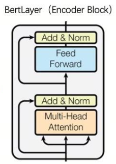
也就是说，它专注于“理解”输入文本的语义，而不负责生成内容。BERT 在训练时采用了一种叫 遮盖语言建模（Masked Language Modeling, MLM） 的方法。它会随机把句子中的部分词语用 [MASK] 遮住，然后让模型去猜被遮掉的词是什么。例如：
输入：我今天去 [MASK] 吃午饭。
模型预测：我今天去 学校 吃午饭。
这种方式让模型能理解句子中词与词之间的关系，从而学会“语言的统计规律”。
这也是为什么 BERT 在文本分类、情感分析、实体识别、相似度匹配等任务上表现极好。
📍代表模型：
BERT、RoBERTa、ELECTRA、DeBERTa、ALBERT
📍典型任务：
情感分类、句子匹配、问答抽取（SQuAD）
GPT：生成语言的大师（Decoder-only）
GPT 的全称是 Generative Pre-trained Transformer。它只使用 Transformer 的 Decoder 结构，目标是生成下一个词。
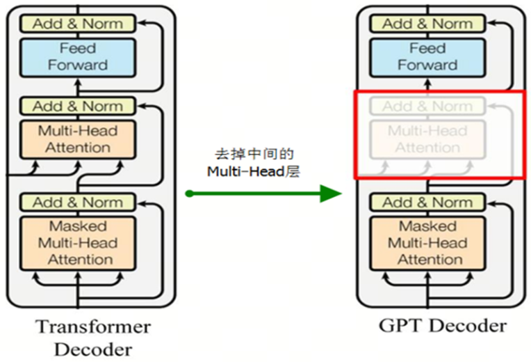
它的训练方式叫 自回归语言建模（Causal Language Modeling, CLM）。举个例子：
输入：我今天去学校
模型预测下一个词：上课。
GPT 通过不断地预测下一个词，逐步生成整句文本。也正因为这种方式，它非常擅长故事续写、对话生成、代码编写等任务。最早的 GPT（2018）只是在小规模数据上预训练，但从 GPT-2、GPT-3 到 ChatGPT，一路狂飙：
- 模型参数从 1 亿增长到上千亿；
- 数据量从几 GB 扩展到数万亿 token；
- 能力从语言生成拓展到推理、编程、对话、图像生成等多模态场景。
📍代表模型：
GPT、GPT-2、GPT-3、GPT-4、LLaMA、Qwen、ChatGPT
📍典型任务：
文本续写、对话、代码生成、创意写作
T5：理解 + 生成的全能选手（Encoder-Decoder）
T5 的全称是 Text-to-Text Transfer Transformer，它是 Transformer 世界的“通才型选手”。它采用了完整的 Encoder-Decoder 结构，能同时理解输入、生成输出。
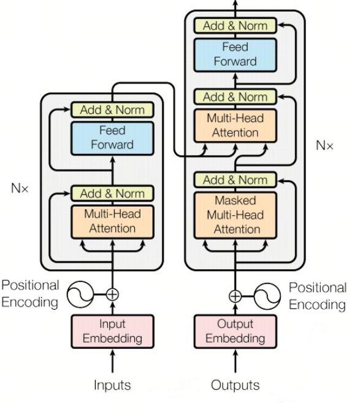
它的最大创新在于：
把所有的 NLP 任务都统一成“文本 → 文本”的形式。
比如：
- 分类任务：输入 “句子：我今天很开心。任务：判断情感。” → 输出 “积极”；
- 翻译任务：输入 “translate English to Chinese: I love apples.” → 输出 “我喜欢苹果”；
- 摘要任务：输入 “summarize: …长文…” → 输出 “一句话总结”。
无论任务类型如何，T5 都用同样的接口形式进行训练，这让模型能共享知识，具备极高的泛化能力。
📍代表模型：
T5、FLAN-T5、mT5、BART、UL2
📍典型任务：
翻译、摘要、问答、指令生成、代码任务
4.2 主流大模型架构的演进路线¶
如果把大模型的发展看作一条时间轴，那么这条轴线背后，其实贯穿着一个始终未变的核心目标：在算力、数据和效果之间，找到更优的平衡点。不同模型的“架构创新”，往往并不是为了炫技，而是对当时现实约束的一种工程回应。从早期的 BERT、GPT-3，到今天的 LLaMA、Mistral、MoE、DeepSeek、Qwen3，这条演进路线大致可以拆成几个关键阶段。
首先，是 “Transformer 范式确立 + 规模化暴力增长”阶段。以 GPT-3 为代表，这一阶段的核心逻辑非常直接：
架构不变，层数加深，宽度加大，数据和算力一起堆。
GPT-3 基本沿用了标准 Decoder-only Transformer：
- 多层 Self-Attention
- 前馈网络（FFN）
- 残差连接 + LayerNorm
参数规模从几亿一路扩展到百亿、千亿级别，模型能力随之呈现出明显的“涌现现象”。这也让业界第一次真正意识到：
在足够大的规模下，统一架构本身就具备强大的泛化潜力。
但问题同样明显：
- 训练成本指数级上升
- 显存、通信、能耗成为硬约束
- 推理效率开始成为瓶颈
这直接推动了下一阶段的变化。
第二阶段，是 “在不牺牲效果的前提下压缩成本”。
LLaMA、Mistral、Qwen 系列可以看作这一阶段的代表。它们并没有推翻 Transformer，而是在“细节处动刀”：
- 更合理的隐藏维度与层数配比
- 更高效的 Attention 变体（如 Grouped Query Attention）
- 更优的数据配方与训练策略
- 更激进的参数共享与裁剪思想
目标很明确：
用更少的参数，逼近甚至超过上一代更大的模型。
这类模型往往给人一种“工程味很重”的感觉——它们不是理论上最优的结构，但在现实资源条件下，性价比极高。
也正是从这一阶段开始，“小而强”的模型开始真正进入应用场景。
第三阶段，是 “稀疏化与条件计算：MoE 路线的回归”。
当模型规模继续膨胀，单纯依靠 dense Transformer 已经难以为继时，MoE（Mixture of Experts）重新回到舞台中央。
MoE 的核心思想可以用一句话概括：
不是每个 token 都值得用全部参数来处理。
在 MoE 中，前馈层被替换为多个 Expert，每个 token 只会激活其中一小部分，例如 \(k\) 个 Expert：
其中：
- \(\mathcal{E}(x)\) 是被路由器选中的 Expert 子集
- \(g_i(x)\) 是对应的门控权重
这样做的好处是：
- 参数规模可以非常大
- 实际计算量却增长有限
DeepSeek、Mixtral 等模型正是这一思路的成熟落地版本。它们在保持推理成本可控的前提下，引入了更强的表达能力，尤其在复杂推理和专业任务中表现突出。
当然，MoE 也并非“银弹”：
- 训练和并行策略复杂
- 负载均衡是工程难题
- 推理部署成本更高
它更像是一条“高性能服务器路线”，而不是普适方案。
第四阶段，是 “为长上下文与真实应用场景服务的结构微调”。
随着模型真正走向生产环境，新的问题浮现出来：
- 上下文越来越长
- 多轮对话、工具调用成为常态
- 延迟和显存直接影响用户体验
这推动了一系列结构层面的“现实主义改造”：
- KV Cache 的深度优化
- Attention 计算的分组与裁剪
- 更适配长序列的位置编码设计
- 推理友好的层归一化与并行布局
Qwen3、最新一代 LLaMA 模型在这一点上尤为明显：
它们并不是单纯追求指标，而是在可部署性、稳定性与能力之间反复权衡。
如果从更高层次回看这条演进路线，可以发现一个清晰的趋势：
模型架构的演进，正在从“追求更强”转向“追求更合理”。
不是每个场景都需要最大模型，也不是每一次升级都依赖参数翻倍。真正成熟的大模型架构，往往是对“算力、数据、任务形态”的一次综合回应。这也正是后续“模型结构选型”讨论的现实基础：没有最好的架构，只有最合适的选择。
4.3 模型结构选型：谁更合适?¶
在准备预训练或选择微调基础模型之前，一个关键问题是：到底选哪一种 Transformer 架构？
常见选项包括：
- BERT（Bidirectional Encoder Representations from Transformers）
- GPT（Generative Pre-trained Transformer）
- T5（Text-to-Text Transfer Transformer）
三者都基于 Transformer 架构，但在用途、训练目标、结构设计上各有千秋。接下来，我们一起看看它们的“优劣势 + 适用场景”，帮你为自己的项目选出最合适的“起点”。
BERT：专注理解的编码器
BERT 是 “只编码器（encoder-only）” 的 Transformer 架构，能够从左到右、右到左同时“看”文本，这就使它在理解任务上极具优势。
- 优点：强大的文本理解能力，适合分类、命名实体识别、问答 (QA) 等任务。
- 劣势：因为不专门用于生成（回文、续写、长对话），它在“生成型”任务上并不是最优选择。
- 适用场景：当你的任务是“理解”更多、而生成需求较低时，比如文本分类、情感分析、实体提取、问答系统的理解模块。
GPT：专注生成的解码器
GPT 系列是“只解码器（decoder-only）”的架构，通常采用自回归方式（左到右地生成下一个 token），擅长“从无开始”生成连贯、高质量的文字。
- 优点：生成能力强，擅长对话、故事、代码、聊天机器人等应用场景。
- 劣势：因为只单向（从前往后）看文本，它在理解上下文、捕捉全局结构上可能比双向模型弱一些。
- 适用场景：如果你的任务是“生成”型的，例如客服机器人、写作辅助、代码生成、对话系统，那么 GPT 会更合适。
T5：灵活的编码-解码（encoder-decoder）全能选手
T5 采用的是“编码器 + 解码器”结构，把各种 NLP 任务都统一成 “输入文本 → 输出文本” 的形式（text-to-text）——不管你的任务是翻译、摘要、问答还是分类，统统都变成「给定一句话 → 输出一句话」。
- 优点：极高的灵活性，可以同时覆盖理解 + 生成任务，适合多任务或任务切换频繁的场景。
- 劣势：结构更复杂、参数更大、训练资源更高；如果只做一个简单理解任务，可能“食材太奢侈”。
- 适用场景：当你希望模型“理解 + 输出”能力都具备，或者希望用一个模型覆盖多种任务（如摘要、翻译 + 问答 + 对话）时，T5 是一个强有力的选择。
《小贴士：资源消耗差异》
| 模型结构 | 参数量（相同规模下） | 显存占用 | 训练速度 | 原因说明 |
|---|---|---|---|---|
| BERT（Encoder-only） | 较小（无解码器） | 较低 | 较快 | 单塔结构、仅做 MLM，不需要自回归 |
| GPT（Decoder-only） | 中等 | 中等 | 中等偏慢 | 自回归训练开销较大 |
| T5（Encoder–Decoder） | 最大 | 最高 | 最慢 | 双塔结构 + Seq2Seq 训练本身更重 |